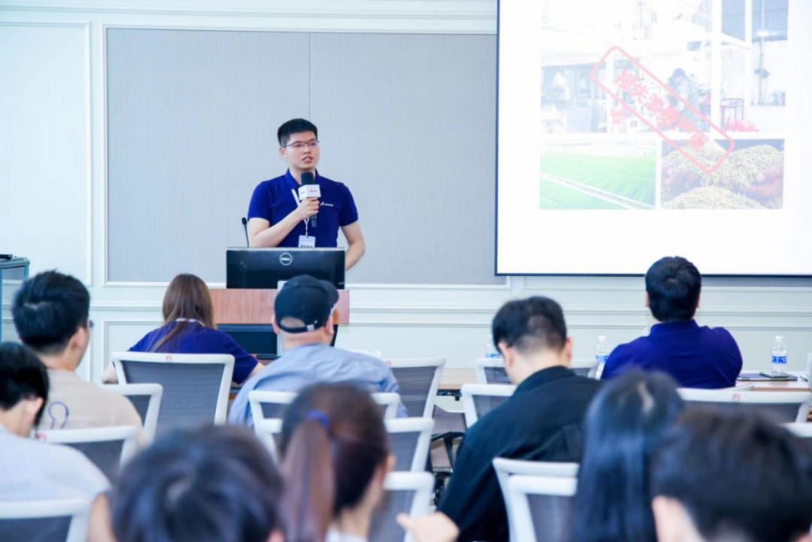

Ascend AI-Based Moderate Rice Processing Solution
I worked with my team on Shengzhi Shimi, an Ascend AI-powered solution for intelligent rice processing. The system combines Ascend computing, MindSpore, and edge-cloud heterogeneous collaboration to inspect rice quality during production and support more stable, moderate processing.
The project targets small, adhesive grain features such as rice embryos and achieves 98.5% segmentation accuracy, while detecting quality indicators including whiteness, embryo retention, chalkiness, and embryo integrity.